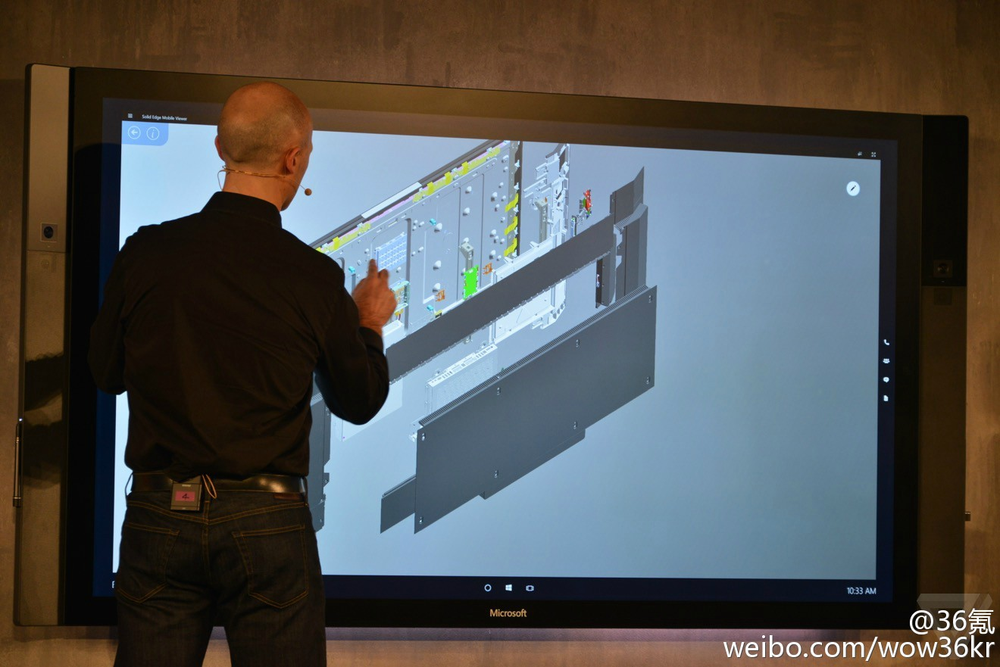

美国西南部严重缺水，科罗拉多河流域的州对水源分配展开了斗争。在亚利桑那州议员们的活动下方案一直搁置。终于1929年加州迎来了自己的总统——胡佛，用其影响通过了方案。亚利桑那州不满分到的少拒绝签字，于是胡佛修改规则说7州中6州签字就自然生效…… 网页链接
美国西南严重缺水，菲尼克斯、拉斯维加斯的地下水都完全抽干了，科罗拉多河水位严重下降。洛杉矶、拉斯维加斯和菲尼克斯都要从几百公里外的水源调水，菲尼克斯更是靠令人震撼的水利工程把水向上垂直抽900米。看这些，我都感觉仿佛在说中国华北地区一样。这书不错 网页链接
这跟cnn用的那个有什么差别？//@watson9:终于来了. Iphone都plus了，大屏的极限还要继续突破@36氪:微软发布 84 英寸超大尺寸全能一体机 Surface Hub | 84 英寸支持多指、多笔触控的 4K 触控屏幕，内置主流各式传感器，多摄像头、麦克风、扬声器……微软想要革新所有办公室和在线会议的协作方式。微软发布 84 英寸超大尺寸全能一体机 Surface Hub 
 网页链接
网页链接